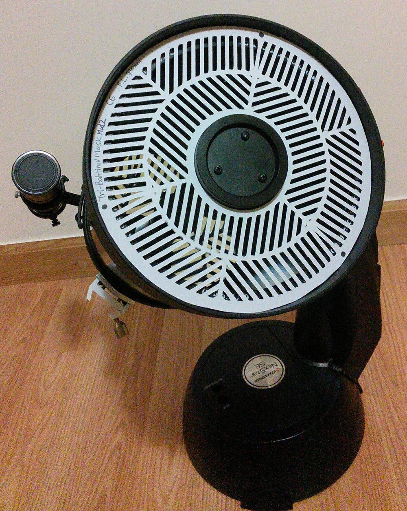
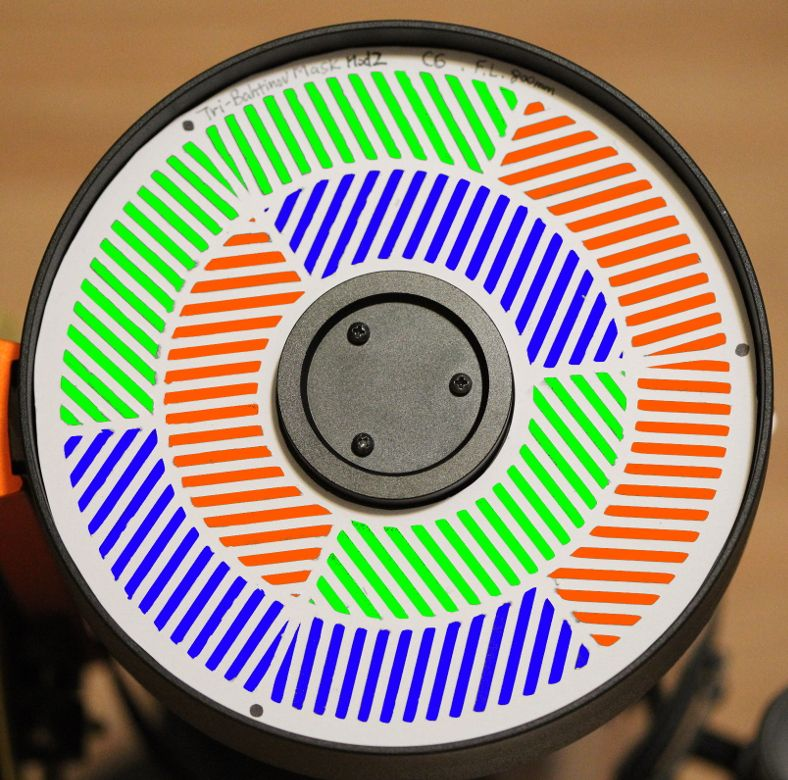
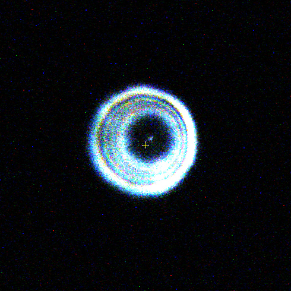
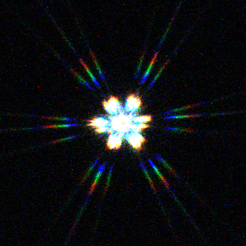
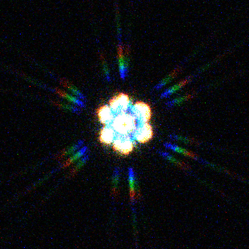
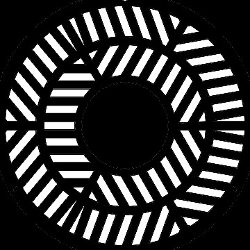
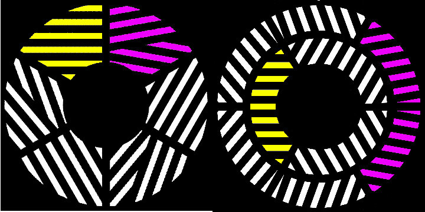
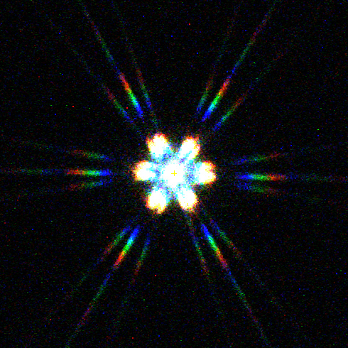
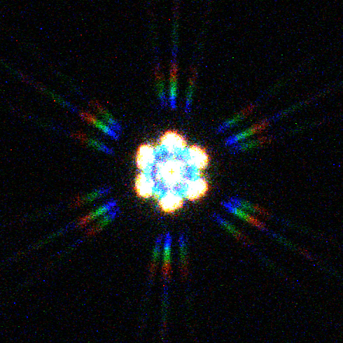

Home
Improve Sensitivity of Tri-Bahtinov Mask
Motivation
At this thread of cloudy nights, an issue on sensitivity of tri-bahtinov mask has been raised. So, this is a study to improve it.
Satoru Takagi
Design
Modified Version (Ver.2) Tri-Bahtinov Mask Generator

Diffraction gratings colored in the same color makes up a set of Bartinov mask. And the tri-bahrtinov mask is formed by the three colored masks.

Diffraction images of the Tri-Bahtinov mask with un-collimated optical system
Note: All the images below are taken with the same amount of un-collimation. The test star is Vega, OTA is C6, the camera is ASI224 MC, and the mask is made equivalent to F.L.=800mm.
| Description | Diffraction images | Mask patterm | |
Defocused image without mask
Misalignment of optical axis is recognized. |  | |
Original
Misalignment is seen in the 3 o'clock direction |  |  |
Second modified version
A misalignment larger than the original is seen in the 6 o'clock direction. The light streak is thick.
NOTE: The diffracted light streak of this modified version rotates 90 degrees with respect to the original. |  |  |
Consideration
Compared with the original Tribatinov mask, the distance between the oblique gratings(purple) and the horizontal gratings(yellow) is widened. It will contribute to increased sensitivity.

And, assuming that the influence of un-collimation is coma, the coma aberration creates aberration due to the image formed by the portion with a different distance from the center of the aperture.(Reference) Therefore, the second modified version made it possible to detect by using zones with different distances from the center of the aperture.
The reason why the light streak became thick was probably because the length of the grating was shortened.
Note: The diffraction image of the Tri-Bahtinov mask with de-focused but collimated
| Description | Diffraction images | Mask patterm | |
Original
The three sets of diffraction images each show equal amount of de-focusing. |  | |
Second modified version
Larger de-focusing signs are seen. Light streak is thick. |  | |